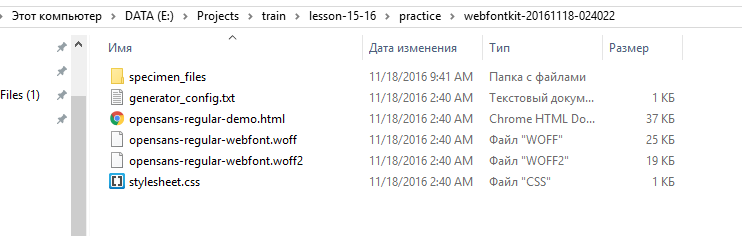
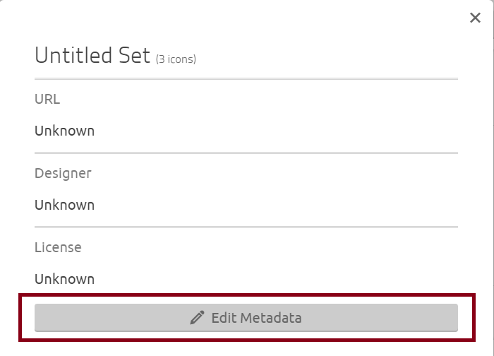

До эпохи веб-шрифтов
Для вставки в веб-страницу нестандартных шрифтов использовали все доступные технологии:
- Просто статические изображения. Да-да нестандартные заголовки просто резались картинками.
- Flash — в нем можно было использовать любой шрифт, он импортировался прямо в swf-файл либо с помощью технологии sifr (Scalable Inman Flash Replacement)
- Серверные скрипты для генерации изображений используя загруженный на сервер шрифт — технология FLIR (FaceLift Image Replacement).
- JavaScript который "рисовал" текст указанным шрифтом с помощью технологий canvas либо VML — технология cufon. Перед этим шрифт конвертировался.
Начало использования веб-шрифтов
В 2009-м году впервые серьёзно заговорили об использовании правила @font-face в CSS для решения вопроса с нестандартными шрифтами.
Форматы веб-шрифтов
Существует несколько форматов шрифтов которые поддерживаются браузерами.
- TTF/OTF — (TrueType font) наиболее известный формат шрифтов, который работает и для Mac OS и для Windows. В IE9 работает только если в файле указан флажок "устанавливаемый" (installable).
- WOFF — (Web Open Font Format) более сжатый формат, представлен в 2009-м году, самый поддерживаемый формат в браузерах. Для Firefox, Internet Explorer >=9 и десктопных браузеров на webkit (Chrome, Safari, Opera).
- WOFF2 — новое поколение WOFF 2.0, ещё более сжатый (на 30% больше чем WOFF 1.0), поддерживается: в Chrome, Firefox (отключен по умолчанию), Opera.
- SVG — именно шрифт а не изображение! Не поддерживается в IE/Edge, Firefox, поддерживается всеми браузерами на webkit, включая мобильные.
- EOT — (Embedded OpenType) формат Microsoft и соответственно поддерживается исключительно в браузерах этой компании: IE/Edge. Для Internet Explorer <= 8.
Использование веб шрифтов
Для использования веб-шрифта необходимы:
- Сам шрифт
- Обновить CSS для подключения шрифта с помощью правила @font-face
- Обновить CSS для использования указанного шрифта
Для использования веб шрифта необходим сам файл шрифта, либо набор файлов в разных форматах. Если шрифт представлен одним файлом, его необходимо преобразовать в другие. Существуют сервисы которые конвертируют шрифт в другие форматы.
Файл шрифта должен предоставлять дизайнер, либо его можно скачать используя сервис Google Fonts. Как правило файл шрифта предоставляется в формате ttf.
Преобразовать шрифт в другие форматы поможет сервис Font Squirrel.
Исчерпывающая информация о @font-face: https://css-tricks.com/snippets/css/using-font-face/
Поддержку технологии можно проверить на CanIUse — http://caniuse.com/#search=font-face
Задание #1.1
- Заказчик решил что в проекте mobi вместо подключения сервиса Google Fonts необходимо использовать локальные файлы шрифтов.
- Зайти на страницу https://fonts.google.com/specimen/Open+Sans?selection.family=Open+Sans
-
Нажать на кнопку Select this font
-
Кликнуть на панель 1. Family Selected чтобы открыть её:

-
Нажать на иконку скачать:

-
Скачанный архив Open_Sans.zip разархивировать и открыть папку с шрифтами:
Имея файл шрифта в формате ttf, мы можем сконвертировать его в другие форматы. -
Открыть генератор шрифтов сервиса Font Squirrel — https://www.fontsquirrel.com/tools/webfont-generator
-
Нажать кнопку Upload Fonts:
-
Выбрать разархивированную папку Open_Sans и файл шрифта OpenSans-Regular.ttf и нажать Открыть

-
Нажать на чекбокс Agreement и нажать на кнопку Download Your Kit
-
Разархивировать скачанную папку с названием подобным webfontkit-20161118-024022.zip и открыть её:
 -
Открыть файл opensans-regular-demo.html:


-
Скачать архив с проектом mobi.zip (тут одна страница) и разархивировать его, затем открыть папку с проектом и создать папку fonts.
- Открыть папку с названием подобным webfontkit-20161118-024022.woff и скопировать в буфер обмена файлы opensans-regular-webfont.woff и opensans-regular-webfont.woff2
-
Открыть папку mobi/fonts и вставить два файла шрифтов:
-
Открыть index.html в редакторе кода и удалить подключение Google Fonts удалив строчку:
<link href="https://fonts.googleapis.com/css?family=Open+Sans" rel="stylesheet"> -
Открыть папку с названием подобным webfontkit-20161118-024022.woff и открыть в редакторе кода файл stylesheet.css и скопировать в буфер обмена правило @font-face:
@font-face { font-family: 'open_sansregular'; src: url('opensans-regular-webfont.woff2') format('woff2'), url('opensans-regular-webfont.woff') format('woff'); font-weight: normal; font-style: normal; } - Открыть в папке проекта mobi в редакторе кода файл css/main.css и в начало файла вставить скопированный ранее код.
-
Исправить название шрифта c 'open_sansregular' на 'Open Sans' и добавить правильный путь к файлам шрифта:
@font-face { font-family: 'Open Sans'; src: url('../fonts/opensans-regular-webfont.woff2') format('woff2'), url('../fonts/opensans-regular-webfont.woff') format('woff'); font-weight: normal; font-style: normal; }
Сохранить файл main.css. -
Открыть в браузере index.html проекта mobi, затем панель для разработчика и вкладку Network и убедиться что теперь вместо шрифта из Google Fonts используется локальный шрифт opensans-regular-webfont.woff2 из папки fonts.
Иконочные шрифты
Иконочные шрифты это шрифты содержащие вместо символов-букв символы-иконки.
Самый популярный иконочный шрифт это Font Awesome включающий в себя 634 иконки.
Эта технология появилась, вызвала восторг и затем дальнейшую критику, однако её использовали и скорее всего в некоторых проектам будут продолжать использовать.
Почему эта технология прекрасна:
- Icon Fonts are Awesome
- Простота подключения — Font Awesome и IcoMoon: работа с иконочным шрифтом
- Существование сервисов таких как IcoMoon позволяющих с лёгкостью создать собственный иконочный шрифт.
Почему эта технология не так хороша по сравнению с SVG:
- Десять причин нашего перехода с иконочного шрифта на SVG
- Seriously, Don’t Use Icon Fonts
- Inline SVG vs Icon Fonts [CAGEMATCH]
Простота создания собственного иконочного шрифта, и существование большого количества бесплатноых иконочных шрифтов привело к значительному распространению этой технологии.
Мы возьмём SVG-иконки которые были использованы в проекте mobi и сделаем иконочный шрифт, который будет включать в себя эти иконки.
Собственный иконочный шрифт
Задание #1.2
-
Зайти на страницу приложения IcoMoon App и нажать кнопку Import Icons:
-
В открывшемся диалоге зайти в папку проекта mobi img, выбрать SVG файлы и нажать Открыть:

-
Кликнуть на иконку меню и View / Edit Info
-
Нажать кнопку Edit Metadata
 -
Ввести в поле Name название Mobi и нажать на крестик для закрытия диалога:
-
Кликнуть на каждую иконку и на кнопку внизу справа Generate Font
-
Убедиться что все три иконки присутствуют и нажать на кнопку Download:
-
После загрузки ахрива icomoon.zip разархивировать его, зайти в папку и отрыть в браузере файл demo.html:
-
Открыть панель для разработчика и посмотреть какой шрифт используется для элемента
<span class="icon-pencil">
-
Посмотреть какие стили используются для псевдоэлемента :before элемента .icon-pencil:
-
В папке icomoon/fonts выделить все файлы и скопировать их в буфер обмена:
-
Вставить файлы в папку mobi/fonts:
-
Открыть файл style.css из папки icomoon в редакторе кода:
-
Выделить весь код и скопировать в буфер обмена:
- Открыть файл main.css проекта mobi в редакторе кода и вставить в начало файла код из буфера обмена.
-
Исправить пути к файлам шрифтов:
@font-face { font-family: 'icomoon'; src: url('../fonts/icomoon.eot?3wxwm2'); src: url('../fonts/icomoon.eot?3wxwm2#iefix') format('embedded-opentype'), url('../fonts/icomoon.ttf?3wxwm2') format('truetype'), url('../fonts/icomoon.woff?3wxwm2') format('woff'), url('../fonts/icomoon.svg?3wxwm2#icomoon') format('svg'); font-weight: normal; font-style: normal; } -
Открыть в редакторе кода mobi/index.html и заменить изображения:
<img src="img/pencil.svg" width="78" height="108" alt="Contrary to popular" />
на<span class="icon-pencil"></span><img src="img/display.svg" width="95" height="81" alt="Contrary to popular" />
на<span class="icon-display"></span><img src="img/cart.svg" width="98" height="90" alt="Contrary to popular" />
на<span class="icon-cart"></span>
-
Открыть в редакторе кода mobi/css/main.css и заменить CSS-код:
на следующий:.features-img img { position: absolute; left: 50%; top: 50%; transform: translate(-50%, -50%); }
Сохранить файл..features-img [class^="icon-"] { font-size: 8.1rem; color: #fff; position: absolute; left: 50%; top: 50%; transform: translate(-50%, -50%); } -
Обновить в браузере страницу index.html и убедиться что иконки приняли более подходящий размер и цвет:
Индивидуальные размеры и положение каждой иконки можно исправить согласно дизайну используя PerfectPixel плагин и CSS.
Выпадающие меню.
В случае когда есть разделы и подстраницы сайта используется выпадающее меню.
Для реализации подобных меню требуется изначально сделать подменю с помощью элемента ul внутри элемента списка основного меню, сделать подменю невидимым используя display: none;, абсолютно спозиционировать его относительно пункта меню Contact, и при li:hover сделать меню видимым.
See the Pen drop menu by Aleksey Korovin (@alekskorovin) on CodePen.
Задание #2.1
- Скачать PSD файл mobi-home-desktop-drop-menu.psd.
- Открыть в редакторе кода mobi/index.html и обновить HTML код меню используя пример http://codepen.io/alekskorovin/pen/yVgpdN/
-
Открыть в редакторе кода mobi/css/main.css и вставить CSS код из примера http://codepen.io/alekskorovin/pen/yVgpdN/ находящийся между комментариями примера
/* Submenu */. Сохранить файл и открыть страницу index.html в браузере. - Открыть скачанный PSD файл mobi-home-desktop-drop-menu.psd и используя Photoshop уточнить все размеры, после чего обновить mobi/css/main.css.
-
Добавить для .header-submenu
display: none; -
Добавить для .header-menu li
position: relative;
Выезжающие меню.
Меню выезжающее из-за края страницы называется off canvas меню, такие меню позиционируют абсолютно либо фиксированно и используя transform: translateX(-100%) задвигают изначально за пределы видимой области страницы. При добавлении класса либо используя состояние наведения либо псевдоселектор элемента формы input type="checkbox", свойство transform меняется на transform: translateX(0), при этом можно добавить transition для более плавного эффекта.
See the Pen off canvas menu by Aleksey Korovin (@alekskorovin) on CodePen.
Задание #2.2
-
Скопировать из примера http://codepen.io/alekskorovin/pen/bBgLBb?editors=1100 HTML-код и вставить его в mobi/index.html после открывающего тега
<body>и сохранить файл. - Скопировать из примера http://codepen.io/alekskorovin/pen/bBgLBb?editors=1100 HTML-код и вставить его в mobi/index.html CSS-код и вставить его в конец файла mobi/css/main.css и сохранить файл.
- Открыть в браузере страницу mobi/index.html
Исчерпывающая информация о JavaScript содержится на ресурсе http://learn.javascript.ru/.
JavaScript® (часто просто JS) — это легкий, интерпретируемый, объектно-ориентированный язык с функциями первого класса. Наиболее широкое применение находит как язык сценариев веб-страниц, но также используется и в других программных продуктах, например, node.js или Apache CouchDB.
https://developer.mozilla.org/ru/docs/Web/JavaScript
JavaScript код может быть сохранён в файле с расширением js и подключен к странице с помощью тега script а в атрибуте src будет путь к JS-файлу. Так же JS-код можно писать прямо между открывающим и закрывающим тегом script: <script>alert('Привет мир!');</script> прямо в HTML. Кроме того код можно вставить в адресную строку браузера с префиксом javascript: и он выполнится.
Задание #3.1
- Написать в строке браузера код
javascript:и затемalert('Привет мир!');и нажать Enter
Кроме того JS код можно запускать в панели для разработчика во вкладке Consle:
Переменные
В JavaScript ES5 переменные объявляются ключевым словом var: var myVariable = 1; — создана переменная myVariable хранящая значение 1. Значение переменных может переопределяться по мере выполнения скрипта и это может быть проблемой.
Переменные в javascript слабо типизированы. Это означает, что при объявлении не нужно указывать тип. Можно присвоить любой переменной любое значение.
Однако при этом интерпретатор javascript (браузер) всегда знает, какого типа значение содержит данная переменная, а значит - какие операции к ней применимы.
Типы данных
В JavaScript есть 5 "примитивных" типов данных и 6-й тип объект (object) https://learn.javascript.ru/types-intro:
- number — число, используется как для целых так и для дробных чисел
var myNumber1 = 1; var myNumber2 = 1.5; - string — строка, значение заключённое в двойные либо одинарные кавычки
var myString = 'Любая строка'; - boolean — логический, значением может быть true (истина) и false (ложь)
var isSummer = false; var isAutumn = true; - null — специальное значение для того чтобы заполнить переменную несуществующим объектом (это показывает что значение уже где-то задано)
var markForHTMLCourse = null; - undefined — специальное значение хранящееся в переменной которой не присвоено значение
var myUndefinedVariable; alert(myUndefinedVariable)
Объекты
Отдельный тип данных это object — объект, он используется для коллекций данных а так же для более сложных структур.
var myObject = {
userName: 'John Doe',
email: 'johndoe@gmail.com',
age: 25,
address: {
city: 'New York',
state: 'NY',
zip: 375
},
phone: null
}Проверить тип данных можно используя оператор typeof
typeof undefined // "undefined"
typeof 0 // "number"
typeof true // "boolean"
typeof "foo" // "string"
typeof {} // "object"
typeof null // "object"
typeof function(){} // "function"
Результат typeof null == "object" – это официально признанная ошибка в языке, которая сохраняется для совместимости. На самом деле null – это не объект, а отдельный тип данных.
Функции являются подвидом объекта, но при определении типа показывается function потому что это более удобно.
Функции
Функции предназначены для многократного использования фрагментов кода.
В JS можно объявлять функции по разному. Основные способы:
-
Function Declaration — декларативное объявление функции, самый классический вариант
Запустить функцию теперь можно так:function myFunction (message) { alert(message); }myFunction('тестовое сообщение'); -
Function expression — функциональное выражение, при этом результат выполнения функции хранится в переменной.
Обычный запуск выполнения функции такой же:var myFunction = function(message) { alert(message); }myFunction('тестовое сообщение'); -
Immediately-Invoked Function Expression (IIFE) — Немедленно вызываемая функция в JavaScript (IIFE) — это синтаксическая конструкция, позволяющая вызвать функцию сразу же в месте ее определения.
или так:(function (message) { alert(message); }('тестовое сообщение'));
При этом функция запустится на выполнения сразу же в том месте где она объявлена.(function (message) { alert(message); })('тестовое сообщение');
Циклы
Циклы - простой способ сделать какое-то действие несколько раз.
Циклы и итерации хорошо описаны на MDN (Mozilla Developer Network).
Примеры циклов
Итерационный — задаётся начальное значение переменной, задаётся условие при котором выполнение цикла заканчивается, и задаётся новое значение получаемое переменной после выполнения цикла.
See the Pen JS loops by Aleksey Korovin (@alekskorovin) on CodePen.
Проход по всем ключам-значениям объекта. В переменной property при каждой итерации будет храниться название свойства. Обращаться к свойствам объекта можно используя запись myObject[propertyName] или же myObject.propertyName что одно и то же.
See the Pen JS loops by Aleksey Korovin (@alekskorovin) on CodePen.
Обзор библиотек и фреймворков
jQuery
Официальная документация — http://learn.jquery.com/about-jquery/
Частичный перевод на русском языке — http://jquery-docs.ru/core/
Библиотека позволяет работать с:
- DOM — выбирать любой элемент страницы по селекторам
- Атрибутами — работать с атрибутами элементов
- Событиями — которые вызываются на элементах либо самой странице
- Ajax — отправлять и принимать данные в формате JSON
- Эффектами — простейшая анимация
- Стилями — читать либо обновлять стили элементов
Использование
jQuery-код должен заключаться в функцию вызываемую после полной загрузки документа:
See the Pen jQuery document ready by Aleksey Korovin (@alekskorovin) on CodePen.
underscore/lo-dash
Две библиотеки содержащие наиболее необходимые функции для работы с данными: сортировки, переборы массивов, нахождение объектов в массивах, обработка объектов и массивов, коллекций, а так же специальные функции и утилиты.
В состав Underscore входит более 80 функций, часть из которых решает более стандартные задачи, например, упрощает работу с коллекциями, а часть позволяет проще делать более экзотические вещи, такие как: функциональное связывание, javascript-шаблонизация, проверки на равенство (напр. объектов), и т.д. Кроме того, Underscore умеет делегировать вызовы, т.е. если код выполняется в современном браузере, который имеет нативные реализации таких методов, как: forEach, map, reduce, filter, every, some и indexOf, то будут вызваны именно они.
Без библиотек
Выбор элементов
Для выбора элементов на странице можно использовать document.querySelector,
https://developer.mozilla.org/ru/docs/Web/API/Document/querySelector
See the Pen JS querySelector by Aleksey Korovin (@alekskorovin) on CodePen.
API для работы с классами
В JavaScript ES5 есть API который поддерживается с Internet Explorer 10 http://caniuse.com/#search=classlist для работы с CSS классами.
Без библиотек возможно включать-выключать CSS-класс, добавлять, удалять, узнавать есть ли такой CSS класс
https://developer.mozilla.org/ru/docs/Web/API/Element/classList
See the Pen JS classList.toggle by Aleksey Korovin (@alekskorovin) on CodePen.
То же с jQuery:
See the Pen JS jQuery by Aleksey Korovin (@alekskorovin) on CodePen.
Компонент accordion
JavaScript версия
See the Pen JS querySelector classList accordion by Aleksey Korovin (@alekskorovin) on CodePen.
jQuery версия
See the Pen JS jquery accordion by Aleksey Korovin (@alekskorovin) on CodePen.
Задание #3.2
- Скачать файл mobi-home-desktop-drop-menu-accordion.psd и открыть его в Photoshop-е.
-
Обновить проект mobi согласно дизайну и появившемуся аккордиону используя примеры на JavaScript или jQuery.
Компонент popup
JavaScript версия
See the Pen JS js popup by Aleksey Korovin (@alekskorovin) on CodePen.
jQuery версия
See the Pen JS jquery popup by Aleksey Korovin (@alekskorovin) on CodePen.
Система управления версиями позволяет хранить несколько версий одного и того же документа, при необходимости возвращаться к более ранним версиям, определять, кто и когда сделал то или иное изменение, и многое другое.
Система контроля версий — это система, которая регистрирует все изменения в файлах, а в дальнейшем позволяет вернуться к их более ранним версиям и определить, кем и когда были сделаны конкретные изменения.
В централизованных системах контроля версий (CVS, Subversion, Perforce) есть центральный сервер, на котором хранятся все данные, и ряд клиентов, получающих из него копии файлов. В таких системах всегда понятно, кто чем занимается в проекте, и их проще администрировать.
Распределенные системы контроля версий (Git, Mercurial, Bazaar) вместо традиционной клиент-серверной модели используют распределенную, то есть все изменения хранятся в локальном хранилище на компьютере и при необходимости синхронизируются с другими. В этом случае устраняется зависимость от центрального сервера, можно вести работу даже без сетевого соединения с ним.
Проекты в системах контроля версий назваются репозиториями. В репозиториях хранится вся история изменений всех файлов проекта.
Рейтинг систем контроля версий 2016
Сервисы GitHub, Bitbucket
Эти сервисы https://bitbucket.org и https://github.com/ дают возможность бесплатно создавать репозитории и работать с ними.
Задание
- Зарегистрироваться в сервисе GitHub и скинуть в Slack имя своего пользователя.
- Зарегистрироваться в сервисе Bitbucket и скинуть в Slack имя своего пользователя.
- Скачать программу SourceTree — https://downloads.atlassian.com/software/sourcetree/windows/SourceTreeSetup_1.9.6.1.exe и установить её.
Репозиторий mobi — https://github.com/alekskorovin/mobi/blob/master/index.html
Домашнее задание
- Залить на FTP все свои работы.
- Доверстать макет mobi включая выпадающее, выезжающее меню, а так же аккордион.
- Пройти курс Мастерская: создаём меню